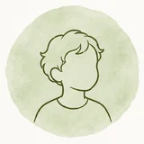

Bambini
Negli incontri con i bambini uso giochi, storie di fantasia e disegni, scegliendo ciò che è più vicino all’età e agli interessi di ciascuno. Una storia inventata o un disegno possono dare forma a emozioni ed esperienze che è difficile raccontare a parole.
Con chi si prende cura di lui ricostruiamo il contesto e concordiamo come accompagnarlo nella quotidianità.